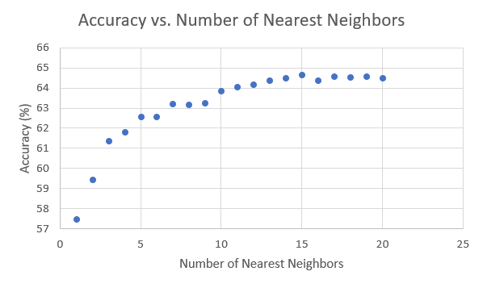

Predicting NFL Draft Outcomes from Combine Statistics

In our project we are attempting to create a classifier that is able to predict whether or not a player will be drafted solely based upon their performance at the NFL combine. Every year there is an extremely large amount of interest surrounding the combine, with both fans and teams eager to determine when or if a player should be drafted. The statistics we used were mostly related to physical ability, such as lifting, running, and agility. The amount of money and research that goes into player performance is continually growing, which is why we hoped to determine the overall importance of these factors on a player’s prospects in the NFL.
Our initial approach was to use decision trees to develop a set of rules that would classify players based upon their physical abilities as well as position, college, height, and several other features. We believed this, or nearest neighbor, would allow us to create accurate models based on the basic intuition that the physical ability was highly correlated with draft prospects. This, however, proved to not be the case as we found very little improvement with these models over ZeroR. From here we began to spend a great deal of time on transforming our dataset to interact variables and spread out possible distributions. We found this to improve the accuracies of several classifiers we explored, but by very little
Even through the use of decision trees, logistic regressions, and many other models, our best classifier only proved to be 2 % more accurate than ZeroR. We discuss these results in more details, as well as their several implications in the attached report.
Figure 1: Accuracy on training data for 10-fold CV for different numbers of nearest neighbors
Final Report